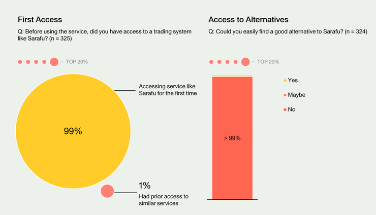

Independent Survey of 325 Sarafu Users

60 Decibels an independent research team randomly selected 325 out of 47,858 registered users (as of early 2021). They separated these into 3 groups Frequent (5+ transactions), Infrequent (1-4 transactions) and Non-trading users all of whom registered between September 1st 2020 and January 31st 2020. According to the study 63% of frequent users saw a significant improvements to their quality of life, 28% of infrequent user and only 4% of non-trading users.
"Local shops have over time been plagued with debts from families living nearby. But thanks to Sarau we see relief." - Male Kisauni"
A lot of strong evidence suggested that users that formed groups of traders around them found the system easy to use and specifically saw it as a way out of informal debt.
“I liked the idea that one could use Sarafu to pay back a debt of cash. It would help clear small debts and you don’t have to worry about having change, unlike carrying a whole 1,000 shillings and the shopkeeper tells you I don’t have change.” - Male, Misc Mombasa"
While others that found themselves isolated, had a hard time understanding what Sarafu was or how to form a network themselves of traders.
“I do not know who to ask in case I have a challenge.” – Female, Mukuru Nairobi"
“They should mobilize more people to join especially business people so that we customers we can easily buy from them using our points.” – Male, Mukuru Nairobi"
Nyanza was singled out as a place where users are much more likely to promote the concept. This is because they formed trading groups around strong local community groups, rather than seeing Sarafu as an airdrop of confusing aid tokens that couldn't be exchange for national currency. In areas where there wasn't a group/chama of users many people assumed that there should be a Sarafu store where they could use the vouchers - rather then them being that store.
“I have not used it much to see a life-changing experience. It becomes very discouraging when people shun the idea when you are trying your best to explain its importance and how more people will enhance its trade.” – Male, Kisauni"
The above quote really expresses how hard it is to be alone in a community of people that don't use Sarafu. Starting from scratch as an individual and building a network of Sarafu user around you is quite a challenge.
“These days I restock my vegetables every day because people can use their Sarafu to get whatever I sell. I am making good profits too.” – Female, Mombasa"
Again when surrounded by a community that is willing to pay-it-forward and support each other using Sarafu the results are quite tangible.
This study gives us a lot of confidence in moving toward re-enabling communities to make their own Community Inclusion Currencies (CICs) rather than fully relying on airdropped Sarafu. Based on this and other studies, the process outlined and currently in draft for the creation of individual unique community created CIC is here .This follows closely how Bangla-Pesa, Lindi-Pesa and other community currencies had been designed in the past (built and owned locally) pre-2020. Indeed, the entire stretch from 2020 to now (September 2021) has been about redeveloping the software in order to allow for multiple currencies once again (after having to drop proprietary blockchain wallet interfaces).
“I used to see other groups benefitting from Sarafu; they could get sugar, maize flour, and rice through Sarafu, so I also inquired from a friend about them and then I joined.” – Female, Mukuru Nairobi"
We seek to support all kinds of tokens in our last-mile wallets (even those for cash transfer programs), but rather than being solely a foreign injector of tokens (like Sarafu) we want community groups to create and own their own tokens. While some 1st time users will still encounter Sarafu (as an training airdrop/gift token), people will be able to form their own CICs in their own groups. Improving user experience and support to communities is a huge priority.
While the results on usage and satisfaction were quite polarizing between frequent and on-users, it was clear that there really was no viable alternative to trade among each other without national currency other than Sarafu (and we hope their own CICs quite soon). We believe that this points to the need for infrastructure (Like CICs) that provides Economic Liberty <https://www.grassrootseconomics.org/post/decolonize-currency/>_ ; enabling people to choose and create any medium of change they want.
We're really excited about the leanings and the path forward and appreciate DOEN.nl and the 60 Decibels team for this study and welcome many more such independent studies. Read the full study here!